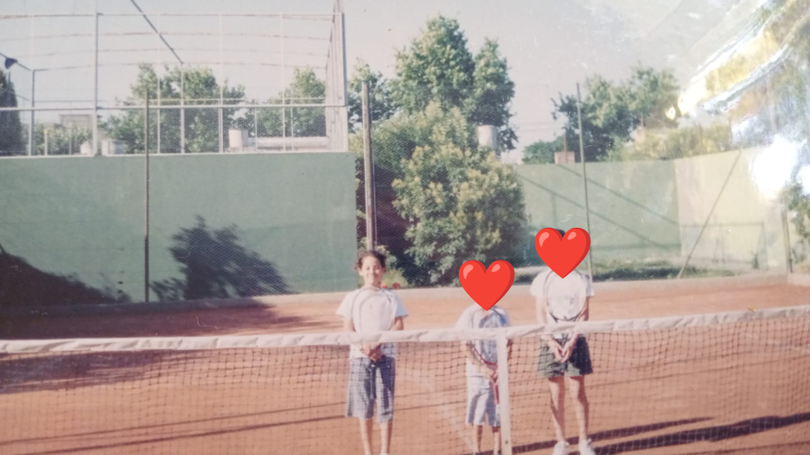
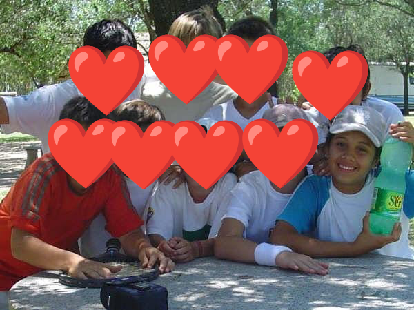

Personal — playing
I haven't watched tennis since Federer retired. Some things leave a void that you just have to trust a future generation will eventually fill again.
Playing tennis, though, that's a different story. I could pick up a racket today. For me it's like riding a bike: once you learn, you don't really forget. My fitness is not what it was when I was a kid, but that's a whole different conversation. The technique is still there 😂.
I started playing at 5 or 6. I played until I was 16 because I wanted to be a tennis player. After school every day: training, running, gym, lessons. In the summer, preseason. I trained and competed whenever I could, when there was a tournament nearby and the family budget allowed for it.
I never did well in competitions. Never won anything. But I loved playing, I loved training. It gave me a purpose and a structure. Going for a run or heading to practice was how I burned off energy and kept my mind busy. And I met incredible people through this sport, people I no longer see or hear from, but who mattered during that time in my life.

